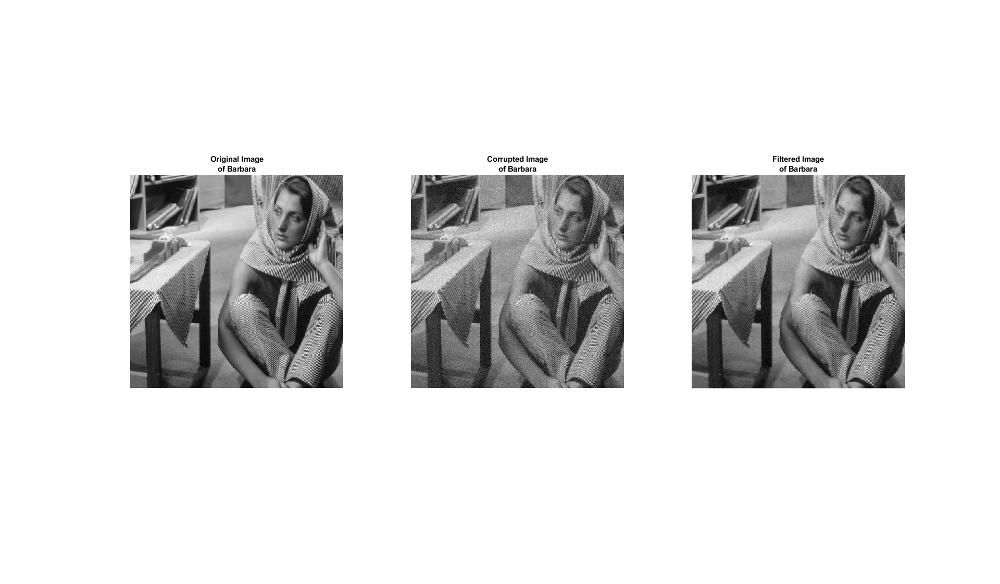
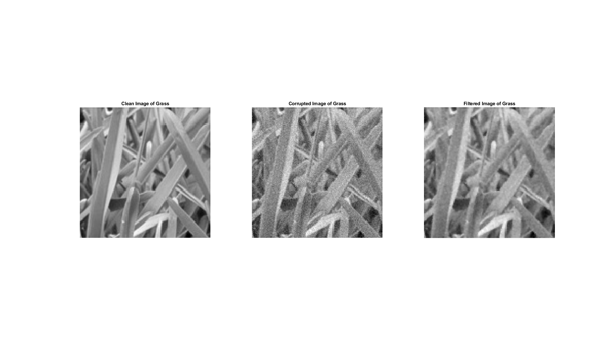
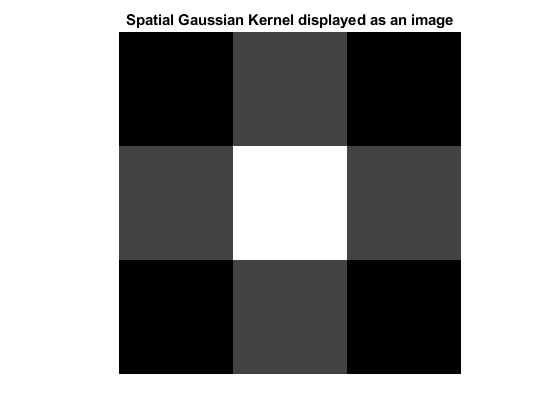
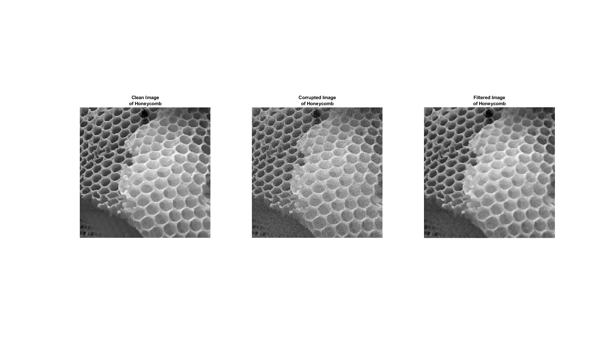
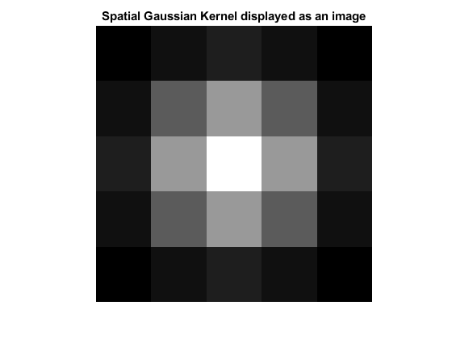

Q2: Edge-preserving Smoothing using Bilateral Filtering.
All randomness is seeded so that exact RMSD values can be observed
Contents
First Image
Optimized value of Sigma was found empirically to be 1.4 along space and 10 along intensity axis.
Denoised RMSD values for different (spatial sigma, intensity sigma) around optimal pair (1.4,10) are as follows- Without Filtering - 5.000 (1.4,10) - 3.2908 (0.9*1.4,10)- 3.2961 (1.1*1.4,10) - 3.2925 (1.4,0.9*10) - 3.3154 (1.4,1.1*10) - 3.3039
Second Image
Optimized value of Sigma was found empirically to be 0.7 along space and 55 along intensity axis.
Denoised RMSD values for different (spatial sigma, intensity sigma) around optimal pair (0.7,55) are as follows- Without Filtering - 11.7669 (0.7,55) - 7.3971 (0.9*0.7,55)- 7.5501 (1.1*0.7,55) - 7.4692 (0.7,0.9*55) - 7.3991 (0.7,1.1*55) - 7.4181
Third Image
Optimized value of Sigma was found empirically to be 1.0 along space and 36 along intensity axis. Note that exact values depend on the run as the random seed is not fixed.
Denoised RMSD values for different (spatial sigma, intensity sigma) around optimal pair (1.0,36) are as follows- Without Filtering - 12.6648 (1.0,36) - 7.3176 (0.9*1.0,36)- 7.3626 (1.1*1.0,36) - 7.3313 (1.0,0.9*36) - 7.3805 (1.0,1.1*36) - 7.3196
References
Increasing size of figure window - https://in.mathworks.com/matlabcentral/answers/102219-how-do-i-make-a-figure-full-screen-programmatically-in-matlab